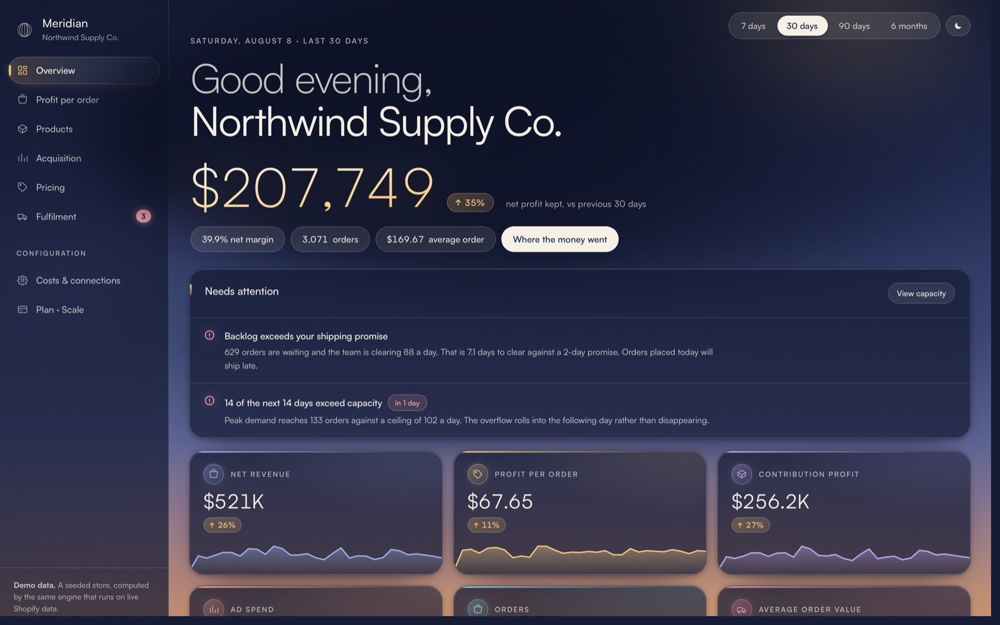
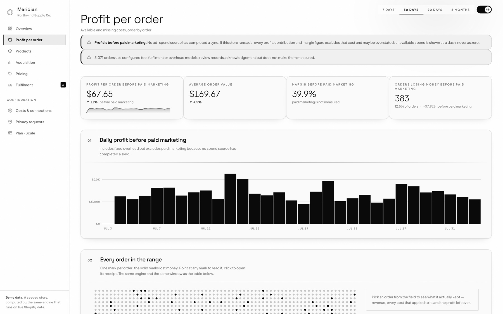
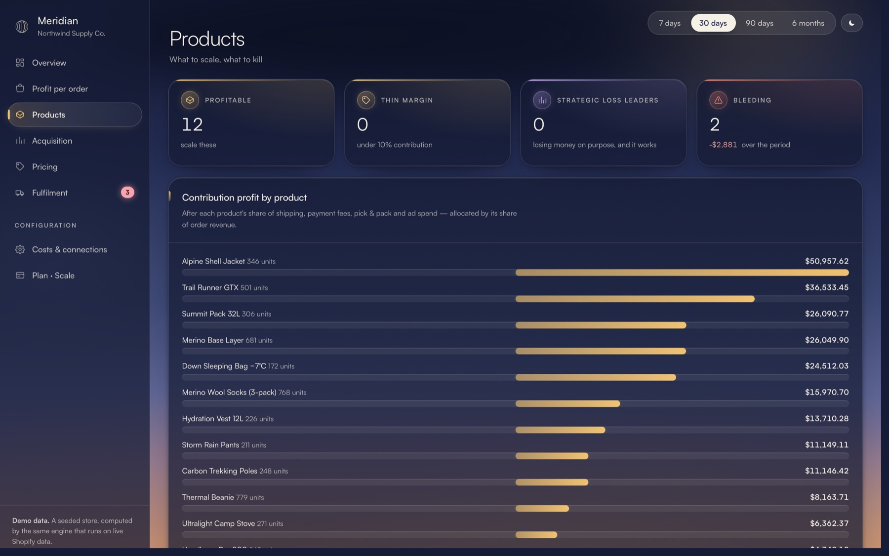
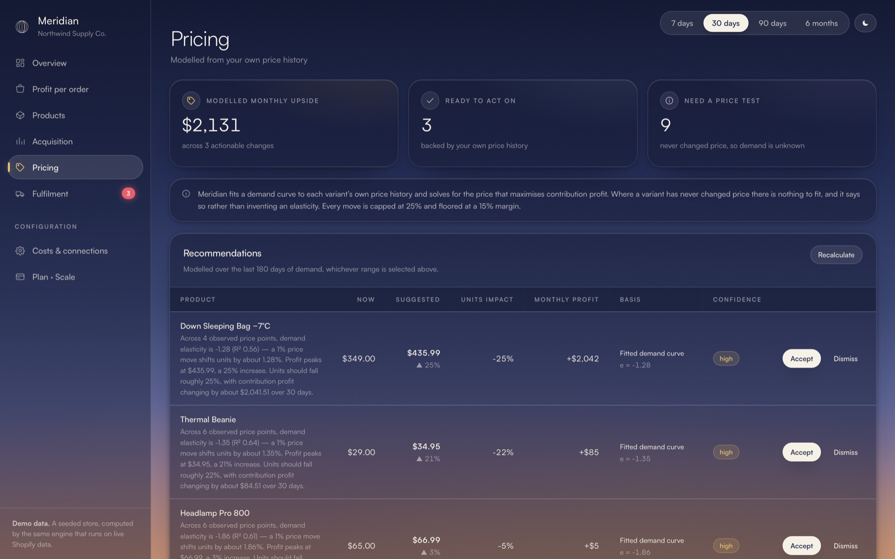
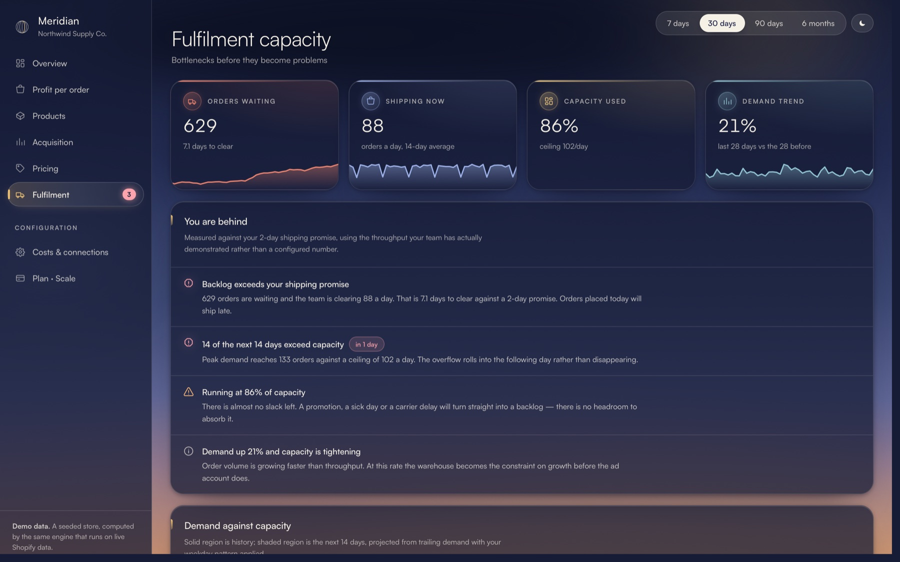
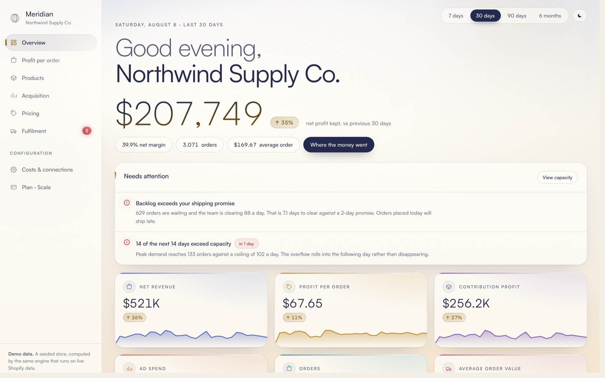

Every order has a receipt.
Net revenue, COGS, fulfilment, payment fees and overhead on one row. Profit is explicitly before paid marketing while that source is unavailable.
Missing inputShown, never zeroed
Orders, product costs, fulfilment, fees and overhead resolved into a qualified profit figure. Modelled and missing inputs remain visible; paid marketing stays excluded until a real source exists.

Meridian starts with revenue and shows each subtraction in the order it hits the P&L. Every modelled input stays marked as modelled. Missing COGS receives no verdict. Unavailable paid marketing never becomes a convenient zero.
The example below uses the seeded demo store.
Scroll through four views. The product stays in place; the question changes.




Net revenue, COGS, fulfilment, payment fees and overhead on one row. Profit is explicitly before paid marketing while that source is unavailable.
Products are ranked by qualified contribution before overhead. Missing COGS stays unclassified instead of receiving a false profit verdict.
Meridian fits demand only to price changes observed after installation. With no usable price history, the honest answer is “not yet.”
Demand is compared with throughput your team has actually demonstrated, revealing the day capacity breaks the shipping promise.
Keep scrolling to move the same operating view from dusk to daybreak.

No product, price or order writes requested.
Charges appear on the merchant’s Shopify invoice.
Modelled, missing and unavailable inputs remain visible.
Billing is handled entirely by Shopify. Meridian never sees a card number.
$490/year · two months free
$1,490/year · two months free
$3,990/year · two months free